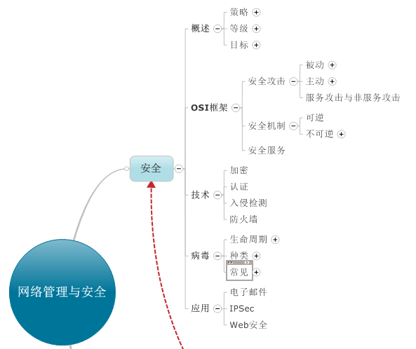

网络安全是指网络系统的部件，程序，数据的安全性，它通过网络信息的存储，传输和使用过程体现。所谓的网络安全性就是保护网络程序，数据或设备，使其免受非授权使用或访问。它的保护内容包括：保护信息和资源；保护客户机和用户；保证私有性。

下面主要说一下加密技术：
基本成分：
1，明文：作为算法的输入，它是原始的，可理解的消息或数据。
2，加密算法：对明文进行各种代换和置换。
3，密钥：密钥也是加密算法的输入。
4，密文：作为算法的输出，它看起来是完全随机而杂乱的数据，依赖于明文和密钥。
5，解密算法：本质上是加密算法的逆。
采用的加密算法：数据加密算法。
其他常用的对称加密算法：
1，三重DES
2，高级加密标准（AES）
3，Blowfish算法
4，RC5算法
组成成分：
1，明文：算法的输入。
2，加密算法：加密算法对明文进行各种转换
3，公钥和私钥：算法的输入。一个用于加密，一个用于解密。
4，密文：算法的输出。
5，解密算法：该算法接收密文和相应的密钥，并产生原始的明文
采用加密算法：RSA算法
对称加密就是加密和解密使用同一个密钥。因为加解密密钥相同，需要通信双方必须选择和保存他们共同的密钥，各方必须信任对方不会将密钥泄密出去，这样就可以实现数据的机密性和完整性。
在公钥加密系统中，加密和解密是相对独立的，加密和解密会使用两把不同的密钥，加密密钥(公开密钥)向公众公开，谁都可以使用，解密密钥(秘密密钥)只有解密人自己知道，非法使用者根据公开的加密密钥无法推算出解密密钥，顾其可称为公钥密码体制。即每个人都有自己的一把私钥，不能交给别人，而每个人还有一把公钥，这把公钥是可以发给所有你想发信息的人。当信息被某一公钥加密后，只有对应的私钥才能打开，这就保证了信息传递的安全性。
对称密钥加解密使用的同一个密钥，或者能从加密密钥很容易推出解密密钥；对称密钥算法具有加密处理简单，加解密速度快，密钥较短，发展历史悠久等特点，非对称密钥（公钥密码）算法具有加解密速度慢的特点，密钥尺寸大，发展历史较短等特点。